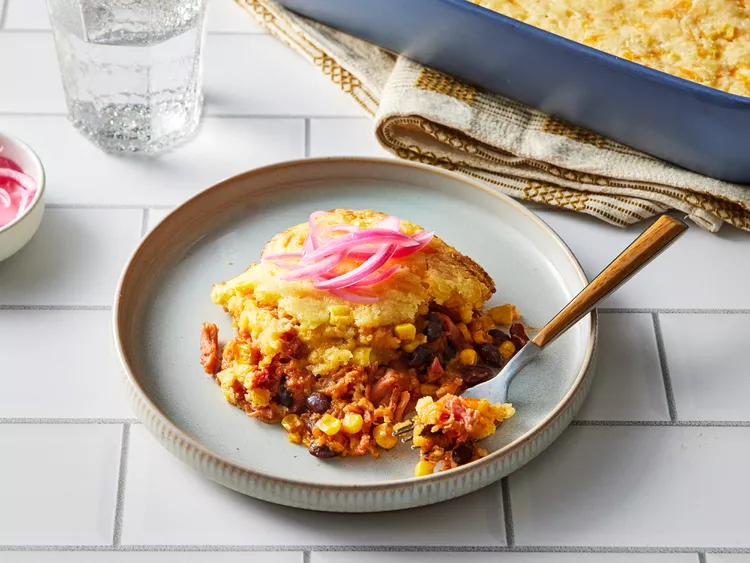

Chopped Salad with Figs and Blue Cheese

Description:
This pulled pork casserole with black beans and corn is an easy stir-together casserole that's perfect for a weeknight dinner or potluck.
Top with pickled onions and coleslaw.
Ingredients:
-
Pulled Pork
-
Frozen kernel corn
-
Canned black beans
-
Shredded Cheddar cheese
-
Barbecue sauce
-
Corn Bread
-
Melted Butter
-
Sour Cream
-
Large Egg
-
Pickled Onion
-
Coleslaw
Preparation:
-
Gather all ingredients.
- Preheat the oven to 350 degrees F (175 degrees C).
Combine pulled pork, 1 cup corn, beans, 1/2 of the Cheddar cheese, and barbecue sauce in a 9x13-inch baking dish; stir until evenly mixed. Gently spread in an even layer.
-
Stir together cornbread mix, remaining 1 cup corn, remaining Cheddar cheese, melted butter, sour cream, and egg in a bowl until well combined.
-
Spoon cornbread mixture over the pulled pork, spreading evenly.
-
Bake in the preheated oven until golden brown and cornbread is set (it will be a little moist), 30 to 35 minutes.
-
Let cool 5 minutes before serving. Serve with pickled onion or coleslaw, if desired.
Link to Homepage